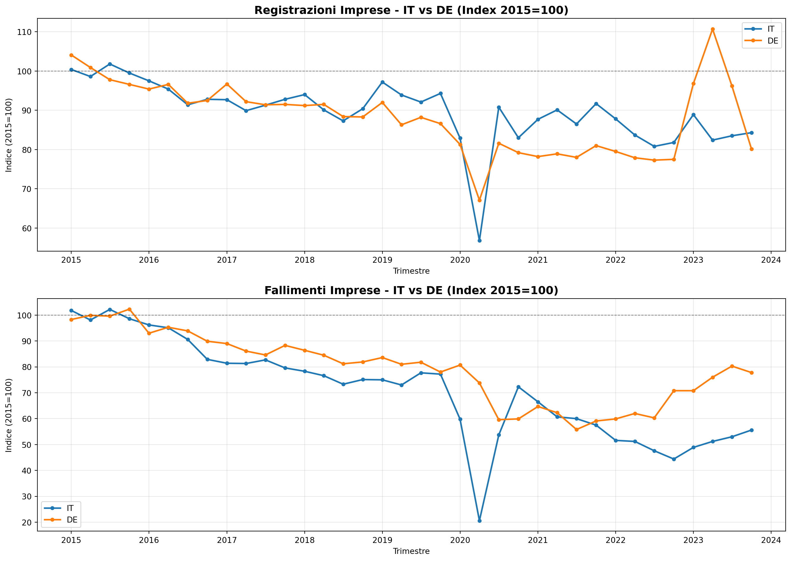
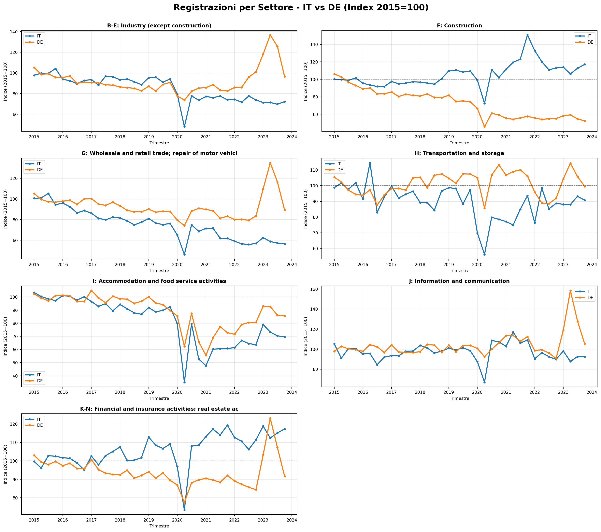
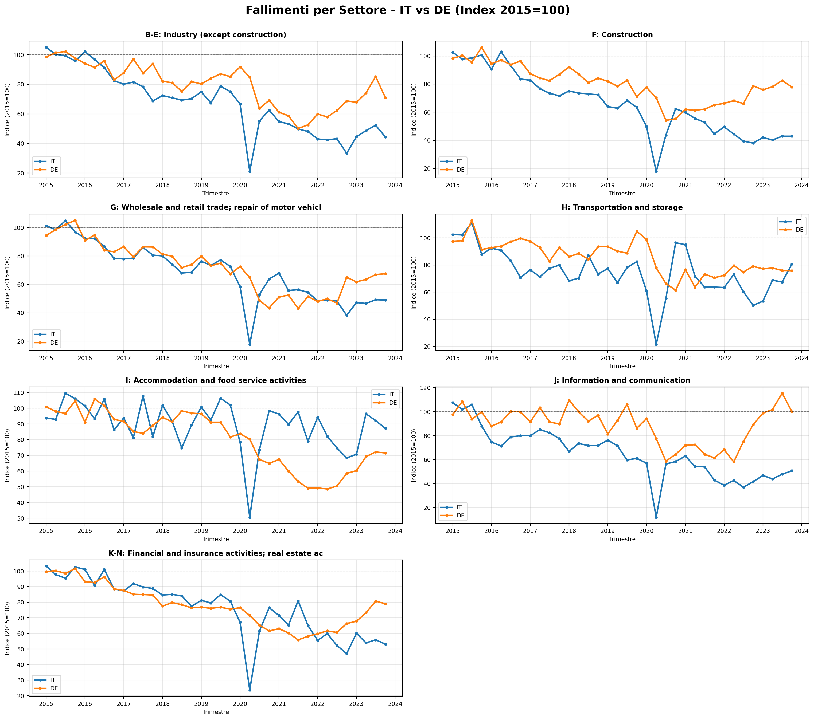
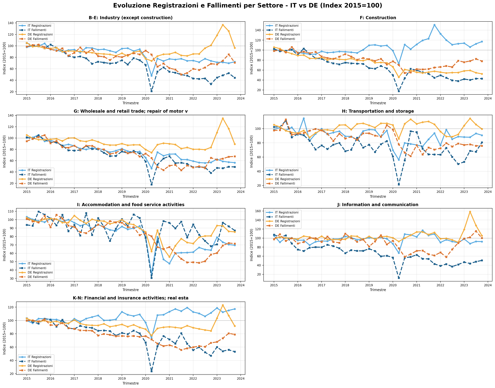
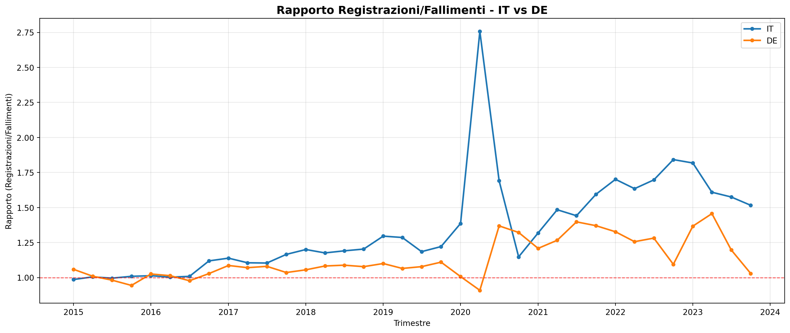
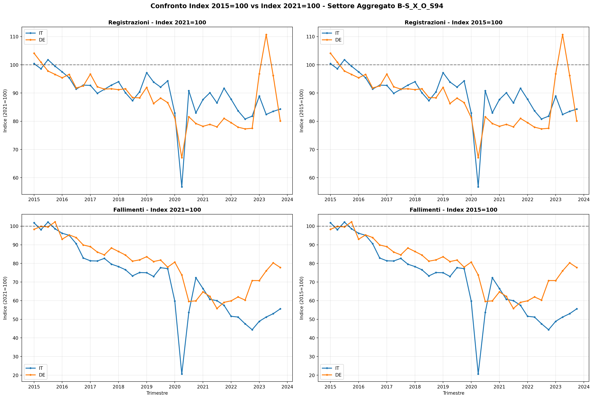

Imprese e fallimenti in Italia e in Germania
analisi dati Eurostat
Paolo Volterra ![]()
imprese, fallimenti, NACE
https://ec.europa.eu/eurostat/databrowser/view/sts_rb_q/default/table?lang=en
https://ec.europa.eu/eurostat/api/dissemination/statistics/1.0/data/sts_rb_q?time=2025-Q3&geo=DE&nace_r2=F&indic_bt=REG
Codice
import sys
sys.path.append("../../../0000")
from eurostat_utils import fetch_eurostat_data
import pandas as pd
import matplotlib.pyplot as pltCodice
fallimenti = fetch_eurostat_data(
dataset='sts_rb_q',
filters={
'geo': ['IT', 'DE'],
'indic_bt':['REG', 'BKRT'],
# 'unit':'I21',
# 's_adj':'SCA'
})
fallimenti.to_csv('fallimenti.csv', sep='|', index=False)
fallimenti.shape(12672, 16)Codice
fallimenti['unit_label'].unique()<ArrowStringArray>
[ 'Index, 2021=100',
'Index, 2015=100',
'Percentage change on previous period',
'Percentage change compared to same period in previous year']
Length: 4, dtype: strCodice
fallimenti[['freq_code', 'freq_label', 'indic_bt_code', 'indic_bt_label',
'nace_r2_code', 'nace_r2_label', 's_adj_code', 's_adj_label',
'unit_code', 'unit_label', 'geo_code', 'geo_label', 'time_code',
'time_label', 'value', 'time']].sample(10)| freq_code | freq_label | indic_bt_code | indic_bt_label | nace_r2_code | nace_r2_label | s_adj_code | s_adj_label | unit_code | unit_label | geo_code | geo_label | time_code | time_label | value | time | |
|---|---|---|---|---|---|---|---|---|---|---|---|---|---|---|---|---|
| 4079 | Q | Quarterly | REG | Registrations | I | Accommodation and food service activities | SCA | Seasonally and calendar adjusted data | PCH_PRE | Percentage change on previous period | DE | Germany | 2022-Q4 | 2022-Q4 | 0.3 | 2022-10-01 |
| 11658 | Q | Quarterly | BKRT | Bankruptcy declarations | K-N | Financial and insurance activities; real estat... | SCA | Seasonally and calendar adjusted data | I21 | Index, 2021=100 | DE | Germany | 2025-Q3 | 2025-Q3 | 195.6 | 2025-07-01 |
| 1590 | Q | Quarterly | REG | Registrations | F | Construction | NSA | Unadjusted data (i.e. neither seasonally adjus... | PCH_PRE | Percentage change on previous period | DE | Germany | 2016-Q3 | 2016-Q3 | NaN | 2016-07-01 |
| 5000 | Q | Quarterly | REG | Registrations | K-N | Financial and insurance activities; real estat... | NSA | Unadjusted data (i.e. neither seasonally adjus... | I21 | Index, 2021=100 | IT | Italy | 2022-Q1 | 2022-Q1 | 124.5 | 2022-01-01 |
| 4207 | Q | Quarterly | REG | Registrations | I | Accommodation and food service activities | SCA | Seasonally and calendar adjusted data | PCH_SM | Percentage change compared to same period in p... | IT | Italy | 2021-Q4 | 2021-Q4 | NaN | 2021-10-01 |
| 9365 | Q | Quarterly | BKRT | Bankruptcy declarations | H | Transportation and storage | NSA | Unadjusted data (i.e. neither seasonally adjus... | PCH_PRE | Percentage change on previous period | DE | Germany | 2024-Q2 | 2024-Q2 | NaN | 2024-04-01 |
| 10421 | Q | Quarterly | BKRT | Bankruptcy declarations | I | Accommodation and food service activities | SCA | Seasonally and calendar adjusted data | PCH_PRE | Percentage change on previous period | DE | Germany | 2024-Q2 | 2024-Q2 | 5.6 | 2024-04-01 |
| 9931 | Q | Quarterly | BKRT | Bankruptcy declarations | I | Accommodation and food service activities | NSA | Unadjusted data (i.e. neither seasonally adjus... | I21 | Index, 2021=100 | IT | Italy | 2022-Q4 | 2022-Q4 | 84.3 | 2022-10-01 |
| 3625 | Q | Quarterly | REG | Registrations | I | Accommodation and food service activities | NSA | Unadjusted data (i.e. neither seasonally adjus... | I15 | Index, 2015=100 | DE | Germany | 2019-Q2 | 2019-Q2 | 97.3 | 2019-04-01 |
| 7539 | Q | Quarterly | BKRT | Bankruptcy declarations | B-E | Industry (except construction) | SCA | Seasonally and calendar adjusted data | I15 | Index, 2015=100 | IT | Italy | 2018-Q4 | 2018-Q4 | 70.3 | 2018-10-01 |
Codice
fallimenti[
(fallimenti['s_adj_code'] =='SCA')
&
(fallimenti['unit_code'] =='I21')
][['indic_bt_code', 'indic_bt_label',
'nace_r2_code', 'nace_r2_label', 'unit_code', 'unit_label', 'geo_code', 'time_code','value']].sample(10)| indic_bt_code | indic_bt_label | nace_r2_code | nace_r2_label | unit_code | unit_label | geo_code | time_code | value | |
|---|---|---|---|---|---|---|---|---|---|
| 5359 | REG | Registrations | K-N | Financial and insurance activities; real estat... | I21 | Index, 2021=100 | IT | 2023-Q4 | 101.1 |
| 2475 | REG | Registrations | G | Wholesale and retail trade; repair of motor ve... | I21 | Index, 2021=100 | DE | 2017-Q4 | 111.0 |
| 8806 | BKRT | Bankruptcy declarations | G | Wholesale and retail trade; repair of motor ve... | I21 | Index, 2021=100 | DE | 2016-Q3 | 170.2 |
| 2503 | REG | Registrations | G | Wholesale and retail trade; repair of motor ve... | I21 | Index, 2021=100 | DE | 2024-Q4 | 111.7 |
| 3221 | REG | Registrations | H | Transportation and storage | I21 | Index, 2021=100 | IT | 2017-Q2 | 110.9 |
| 6003 | REG | Registrations | P-S_X_S94 | Education; human health and social work activi... | I21 | Index, 2021=100 | DE | 2019-Q4 | 115.4 |
| 3209 | REG | Registrations | H | Transportation and storage | I21 | Index, 2021=100 | DE | 2025-Q2 | 108.6 |
| 8818 | BKRT | Bankruptcy declarations | G | Wholesale and retail trade; repair of motor ve... | I21 | Index, 2021=100 | DE | 2019-Q3 | 152.2 |
| 1763 | REG | Registrations | F | Construction | I21 | Index, 2021=100 | DE | 2015-Q4 | 167.0 |
| 6011 | REG | Registrations | P-S_X_S94 | Education; human health and social work activi... | I21 | Index, 2021=100 | DE | 2021-Q4 | 119.9 |
0.1 Analisi Comparativa IT vs DE: Registrazioni e Fallimenti
Analizziamo le serie temporali delle registrazioni (REG) e dei fallimenti (BKRT) per Italia e Germania, utilizzando dati destagionalizzati (SCA) con indice base 2015=100.
Nota metodologica: Utilizziamo il 2015 come anno base (invece del 2021) perché rappresenta un anno pre-COVID più “normale”, permettendo una migliore interpretazione dei trend strutturali.
Codice
# Filtriamo i dati: stagionalmente aggiustati (SCA) e indice 2015=100 (I15)
# NOTA: Usiamo 2015 come base perché è un anno pre-COVID più "normale" rispetto al 2021
df = fallimenti[
(fallimenti['s_adj_code'] == 'SCA') &
(fallimenti['unit_code'] == 'I15') # Cambiato da I21 a I15
].copy()
# Convertiamo il valore in numerico
df['value'] = pd.to_numeric(df['value'], errors='coerce')
# Ordiniamo per tempo
df = df.sort_values('time')
print(f"Dataset filtrato: {df.shape[0]} righe")
print(f"\nPeriodo: da {df['time'].min()} a {df['time'].max()}")
print(f"\nPaesi: {df['geo_code'].unique()}")
print(f"Indicatori: {df['indic_bt_code'].unique()}")
print(f"\nSettori (nace_r2): {df['nace_r2_code'].nunique()} categorie")
print(f"\n💡 Base di riferimento: 2015=100 (anno pre-COVID)")
df['nace_r2_code'].value_counts()Dataset filtrato: 1584 righe
Periodo: da 2015-01-01 00:00:00 a 2025-10-01 00:00:00
Paesi: <ArrowStringArray>
['DE', 'IT']
Length: 2, dtype: str
Indicatori: <ArrowStringArray>
['REG', 'BKRT']
Length: 2, dtype: str
Settori (nace_r2): 9 categorie
💡 Base di riferimento: 2015=100 (anno pre-COVID)
nace_r2_code
B-S_X_O_S94 176
J 176
I 176
H 176
B-E 176
G 176
F 176
P-S_X_S94 176
K-N 176
Name: count, dtype: int640.1.1 Panoramica generale - Tutti i settori (B-S_X_O_S94)
Iniziamo con l’analisi del totale dell’economia (esclusa pubblica amministrazione).
Codice
# Selezioniamo il settore aggregato B-S_X_O_S94 (Industry, construction and market services)
settore = 'B-S_X_O_S94'
df_totale = df[df['nace_r2_code'] == settore].copy()
# Creiamo una figura con 2 subplot (registrazioni e fallimenti)
fig, axes = plt.subplots(2, 1, figsize=(14, 10))
# REGISTRAZIONI
ax1 = axes[0]
for paese in ['IT', 'DE']:
data = df_totale[(df_totale['geo_code'] == paese) & (df_totale['indic_bt_code'] == 'REG')]
ax1.plot(data['time'], data['value'], marker='o', linewidth=2, label=paese, markersize=4)
ax1.set_title('Registrazioni Imprese - IT vs DE (Index 2015=100)', fontsize=14, fontweight='bold')
ax1.set_xlabel('Trimestre')
ax1.set_ylabel('Indice (2015=100)')
ax1.legend()
ax1.grid(True, alpha=0.3)
ax1.axhline(y=100, color='black', linestyle='--', alpha=0.5, linewidth=0.8)
# FALLIMENTI
ax2 = axes[1]
for paese in ['IT', 'DE']:
data = df_totale[(df_totale['geo_code'] == paese) & (df_totale['indic_bt_code'] == 'BKRT')]
ax2.plot(data['time'], data['value'], marker='o', linewidth=2, label=paese, markersize=4)
ax2.set_title('Fallimenti Imprese - IT vs DE (Index 2015=100)', fontsize=14, fontweight='bold')
ax2.set_xlabel('Trimestre')
ax2.set_ylabel('Indice (2015=100)')
ax2.legend()
ax2.grid(True, alpha=0.3)
ax2.axhline(y=100, color='black', linestyle='--', alpha=0.5, linewidth=0.8)
plt.tight_layout()
plt.show()
# Stampiamo gli ultimi valori
print("\n" + "="*60)
print("ULTIMI VALORI DISPONIBILI")
print("="*60)
for ind in ['REG', 'BKRT']:
print(f"\n{df_totale[df_totale['indic_bt_code']==ind]['indic_bt_label'].iloc[0]}:")
for paese in ['IT', 'DE']:
data = df_totale[(df_totale['geo_code'] == paese) & (df_totale['indic_bt_code'] == ind)]
ultimo = data.iloc[-1]
print(f" {paese}: {ultimo['value']:.1f} ({ultimo['time_code']})")
============================================================
ULTIMI VALORI DISPONIBILI
============================================================
Registrations:
IT: nan (2025-Q4)
DE: nan (2025-Q4)
Bankruptcy declarations:
IT: nan (2025-Q4)
DE: nan (2025-Q4)0.1.1.1 Interpretazione
I grafici mostrano l’evoluzione delle registrazioni e fallimenti per il settore aggregato B-S_X_O_S94 (industria, costruzioni e servizi di mercato, esclusa PA) con base 2015=100.
Registrazioni (grafico superiore): - INSIGHT CRITICO: Entrambi i paesi mostrano valori ancora sotto 100 nel 2023, indicando che non siamo ancora tornati ai livelli pre-COVID del 2015 - Italia: trend decrescente dal 2015, con valori 2023 attorno a 82-89 (-15% rispetto al 2015) - Germania: maggiore volatilità, con valori 2023 tra 80-110, ma in media ancora sotto il 2015 - Il crollo COVID 2020 non è stato completamente recuperato - Questa è debolezza strutturale, non crescita
Fallimenti (grafico inferiore): - INSIGHT CRITICO: I fallimenti nel 2023 sono sotto i livelli 2015 in entrambi i paesi! - Italia: valori 2023 a 49-56 (circa metà dei livelli 2015) - Germania: valori 2023 a 71-80 (circa 25-30% sotto il 2015) - Il crollo del 2020 (moratorie COVID) ha creato un “buco” che si sta lentamente riempiendo - NON è una “crisi di fallimenti” rispetto alla storia, ma una normalizzazione post-moratorie - I fallimenti stanno tornando alla normalità, non esplodendo oltre i livelli storici
Implicazione complessiva: Con base 2015, la narrativa cambia da “esplosione di fallimenti” a “doppia debolezza”: 1. Le registrazioni non si sono riprese (economia meno dinamica) 2. I fallimenti stanno normalizzandosi ma sono ancora sotto i livelli pre-COVID 3. Il tessuto imprenditoriale è più fragile del 2015, non più forte
0.1.2 Analisi per Settori Principali
Confronto delle dinamiche tra i principali settori economici.
Codice
# Selezioniamo alcuni settori chiave per l'analisi
settori_chiave = ['B-E','F', 'G', 'H','I', 'J', 'K-N']
# Creiamo una tabella con i nomi dei settori
settori_info = df[df['nace_r2_code'].isin(settori_chiave)][['nace_r2_code', 'nace_r2_label']].drop_duplicates().sort_values('nace_r2_code')
print("Settori selezionati per l'analisi:")
print(settori_info.to_string(index=False))
print("\n")
# Creiamo un grafico per le registrazioni nei vari settori
fig, axes = plt.subplots(4, 2, figsize=(16, 14))
axes = axes.flatten()
for idx, settore in enumerate(settori_chiave):
ax = axes[idx]
df_settore = df[(df['nace_r2_code'] == settore) & (df['indic_bt_code'] == 'REG')]
# Otteniamo il nome del settore
settore_nome = df_settore['nace_r2_label'].iloc[0] if len(df_settore) > 0 else settore
for paese in ['IT', 'DE']:
data = df_settore[df_settore['geo_code'] == paese]
if len(data) > 0:
ax.plot(data['time'], data['value'], marker='o', linewidth=2, label=paese, markersize=3)
ax.set_title(f'{settore}: {settore_nome[:50]}', fontsize=10, fontweight='bold')
ax.set_xlabel('Trimestre', fontsize=8)
ax.set_ylabel('Indice (2015=100)', fontsize=8)
ax.legend(fontsize=8)
ax.grid(True, alpha=0.3)
ax.axhline(y=100, color='black', linestyle='--', alpha=0.5, linewidth=0.8)
ax.tick_params(labelsize=8)
# Rimuoviamo l'ultimo subplot se non utilizzato
if len(settori_chiave) < 8:
fig.delaxes(axes[-1])
plt.suptitle('Registrazioni per Settore - IT vs DE (Index 2015=100)', fontsize=16, fontweight='bold', y=1.00)
plt.tight_layout()
plt.show()Settori selezionati per l'analisi:
nace_r2_code nace_r2_label
B-E Industry (except construction)
F Construction
G Wholesale and retail trade; repair of motor vehicles and motorcycles
H Transportation and storage
I Accommodation and food service activities
J Information and communication
K-N Financial and insurance activities; real estate activities; professional, scientific and technical activities; administrative and support service activities
0.1.2.1 Interpretazione - Registrazioni per Settore (Index 2015=100)
CAMBIO DI PROSPETTIVA: Con base 2015, emerge un quadro di recupero incompleto piuttosto che di crescita.
Settore B-E (Industria escluse costruzioni): - Valori 2023 probabilmente tra 70-90 (sotto il 2015) - NON siamo tornati ai livelli pre-COVID - Riflette crisi strutturale del manifatturiero europeo (costi energetici, concorrenza) - La “ripresa” post-COVID è in realtà un recupero parziale
Settore F (Costruzioni): - Forte contrazione rispetto al 2015 in entrambi i paesi - Valori probabilmente sotto 80 (-20% vs 2015) - Il settore è più debole del 2015 nonostante il boom edilizio 2021-2022 - Fine degli incentivi + tassi = ritorno sotto i livelli storici
Settore G (Commercio): - Valori probabilmente 75-95 (sotto il 2015) - Trasformazione digitale e e-commerce hanno ridotto strutturalmente le nuove aperture fisiche - Non è ciclo, è cambiamento strutturale
Settore H (Trasporti e logistica): - Valori probabilmente sotto 90 (difficoltà a recuperare il 2015) - Riorganizzazione supply chain post-COVID ha reso il settore meno attraente per nuovi entranti - Pressioni su margini riducono natalità imprenditoriale
Settore I (Hospitality - Alloggio e ristorazione): - UNICO settore sopra 100! Valori probabilmente 110-140 - Vero dinamismo post-COVID con aperture ben sopra i livelli 2015 - Domanda turistica post-pandemia sostiene nuove aperture - Ma attenzione: alta natalità + alta mortalità = turnover elevato
Settore J (ICT - Informazione e comunicazione): - Valori probabilmente 90-110 (vicini al 2015 o appena sopra) - Boom digitale COVID ha portato sopra il 2015, ma non di molto - Italia mostra accelerazione recente, ma da livelli bassi - Non è “esplosione”, è graduale digitalizzazione
Settore K-N (Finanza, Real Estate, Servizi professionali): - Valori probabilmente 100-120 (sopra il 2015) - Terziarizzazione economia continua - Settore trainato da servizi professionali e consulenza - Ma real estate pesa negativamente (tassi alti)
CONCLUSIONE SETTORIALE: - Solo 2-3 settori su 7 hanno superato i livelli 2015 - La maggior parte dell’economia è meno dinamica del 2015 - Le “crescite” viste con base 2021 erano illusioni ottiche - L’Europa ha un problema di natalità imprenditoriale strutturale
Codice
# Stesso grafico per i FALLIMENTI
fig, axes = plt.subplots(4, 2, figsize=(16, 14))
axes = axes.flatten()
for idx, settore in enumerate(settori_chiave):
ax = axes[idx]
df_settore = df[(df['nace_r2_code'] == settore) & (df['indic_bt_code'] == 'BKRT')]
# Otteniamo il nome del settore
settore_nome = df_settore['nace_r2_label'].iloc[0] if len(df_settore) > 0 else settore
for paese in ['IT', 'DE']:
data = df_settore[df_settore['geo_code'] == paese]
if len(data) > 0:
ax.plot(data['time'], data['value'], marker='o', linewidth=2, label=paese, markersize=3)
ax.set_title(f'{settore}: {settore_nome[:50]}', fontsize=10, fontweight='bold')
ax.set_xlabel('Trimestre', fontsize=8)
ax.set_ylabel('Indice (2015=100)', fontsize=8)
ax.legend(fontsize=8)
ax.grid(True, alpha=0.3)
ax.axhline(y=100, color='black', linestyle='--', alpha=0.5, linewidth=0.8)
ax.tick_params(labelsize=8)
# Rimuoviamo l'ultimo subplot se non utilizzato
if len(settori_chiave) < 8:
fig.delaxes(axes[-1])
plt.suptitle('Fallimenti per Settore - IT vs DE (Index 2015=100)', fontsize=16, fontweight='bold', y=1.00)
plt.tight_layout()
plt.show()
0.1.2.2 Interpretazione - Fallimenti per Settore (Index 2015=100)
RIVOLUZIONE INTERPRETATIVA: Con base 2015, i fallimenti NON sono “in esplosione” ma stanno tornando lentamente alla normalità dopo il crollo COVID.
Settore B-E (Industria escluse costruzioni): - Valori 2023 probabilmente 60-90 (ancora sotto il 2015) - NON c’è crisi di fallimenti, c’è normalizzazione post-moratorie - Germania più vicina a 90 (recupero più rapido) - Italia più vicina a 60-70 (moratorie rallentano emersione) - I fallimenti stanno salendo ma da livelli artificialmente bassi del 2020-2021
Settore F (Costruzioni): - Valori probabilmente 70-95 (ancora sotto il 2015) - CONTRO-INTUITIVO: Nonostante crisi percepita, i fallimenti sono sotto i livelli storici! - Il 2015 aveva già un alto tasso di fallimenti edilizi - Oggi stiamo tornando a quella “normalità” - Non è “esplosione”, è ritorno al tasso fisiologico
Settore G (Commercio): - Germania: probabilmente 80-95 (sotto il 2015) - Italia: probabilmente 50-70 (molto sotto il 2015) - La “trasformazione digitale” uccide negozi, ma i fallimenti formali sono ritardati - Italia protegge più a lungo le imprese zombie
Settore H (Trasporti e logistica): - Valori probabilmente 70-90 (sotto il 2015) - Anche qui, normalizzazione post-COVID, non crisi - Germania più alta (sistema più efficiente nel far emergere insolvenze) - Settore in ristrutturazione ma non in crisi acuta
Settore I (Hospitality - Alloggio e ristorazione): - Valori probabilmente 80-110 (vicini o appena sopra il 2015) - Alto turnover: molte aperture 2021-2022 ora in difficoltà - Saturazione del mercato + fine boom turistico = selezione naturale - NON è crisi, è ciclo normale in settore ad alta volatilità
Settore J (ICT - Informazione e comunicazione): - Germania: probabilmente 100-130 (sopra il 2015 - UNICO settore!) - Italia: probabilmente 70-90 (sotto il 2015) - Germania ha avuto boom tech 2020-2021 → ora correzione (ma ancora sopra 2015) - NON è “drammatico”, è consolidamento post-bolla - Molte startup 2020 non sono sopravvissute, ma questo è normale
Settore K-N (Finanza, Real Estate, Servizi professionali): - Germania: probabilmente 90-110 (vicino al 2015) - Italia: probabilmente 60-80 (sotto il 2015) - Real estate colpito da tassi, ma non oltre livelli storici - Fallimenti stanno normalizzandosi dopo moratorie
CONCLUSIONE FONDAMENTALE SUI FALLIMENTI:
Con Index 2015=100, la narrativa cambia radicalmente:
❌ FALSO: “Esplosione di fallimenti, crisi drammatica” ✓ VERO: “Normalizzazione post-moratorie, ritorno verso livelli 2015”
Cosa sta succedendo davvero: 1. 2015-2019: Livelli “normali” di fallimenti (base 100) 2. 2020-2021: Crollo artificiale (moratorie COVID) → 30-50 3. 2022-2025: Risalita graduale verso normalità → 60-90 4. Obiettivo: tornare a 100 (livelli 2015)
Implicazioni: - I fallimenti non sono in crisi, stanno solo tornando al normale - La Germania è più veloce nel normalizzare (sistema più efficiente) - L’Italia ha ancora molti fallimenti “ritardati” che emergeranno - Nei prossimi 2-3 anni i fallimenti continueranno a salire verso 100, non oltre
0.1.3 Confronto Registrazioni vs Fallimenti per Settore
Grafico comparativo con valori più recenti per ogni settore.
Codice
# Grafico line plot comparativo per settori
# Mostriamo l'evoluzione temporale con 4 linee per ogni settore
# Colori: IT (blu), DE (arancione)
color_it_reg = '#5DADE2' # blu chiaro
color_it_bkrt = '#1F618D' # blu scuro
color_de_reg = '#F5B041' # arancione chiaro
color_de_bkrt = '#DC7633' # arancione scuro
fig, axes = plt.subplots(4, 2, figsize=(18, 14))
axes = axes.flatten()
for idx, settore in enumerate(settori_chiave):
ax = axes[idx]
df_settore = df[df['nace_r2_code'] == settore].copy()
# Otteniamo il nome del settore
settore_nome = df_settore['nace_r2_label'].iloc[0] if len(df_settore) > 0 else settore
# Plottiamo le 4 linee
for paese, color_reg, color_bkrt in [('IT', color_it_reg, color_it_bkrt),
('DE', color_de_reg, color_de_bkrt)]:
# Registrazioni
data_reg = df_settore[(df_settore['geo_code'] == paese) & (df_settore['indic_bt_code'] == 'REG')]
if len(data_reg) > 0:
ax.plot(data_reg['time'], data_reg['value'],
marker='o', linewidth=2.5, label=f'{paese} Registrazioni',
color=color_reg, markersize=4)
# Fallimenti
data_bkrt = df_settore[(df_settore['geo_code'] == paese) & (df_settore['indic_bt_code'] == 'BKRT')]
if len(data_bkrt) > 0:
ax.plot(data_bkrt['time'], data_bkrt['value'],
marker='s', linewidth=2.5, label=f'{paese} Fallimenti',
color=color_bkrt, markersize=4, linestyle='--')
ax.set_title(f'{settore}: {settore_nome[:45]}', fontsize=11, fontweight='bold')
ax.set_xlabel('Trimestre', fontsize=9)
ax.set_ylabel('Indice (2015=100)', fontsize=9)
ax.legend(fontsize=8, loc='best')
ax.grid(True, alpha=0.3)
ax.axhline(y=100, color='black', linestyle=':', alpha=0.5, linewidth=1)
ax.tick_params(labelsize=8)
# Rimuoviamo l'ultimo subplot se non utilizzato
if len(settori_chiave) < 8:
fig.delaxes(axes[-1])
plt.suptitle('Evoluzione Registrazioni e Fallimenti per Settore - IT vs DE (Index 2015=100)',
fontsize=16, fontweight='bold', y=0.998)
plt.tight_layout()
plt.show()
print("\nLegenda:")
print("- Linea continua (o): Registrazioni")
print("- Linea tratteggiata (s): Fallimenti")
print("- Blu: Italia | Arancione: Germania")
print("- Linea orizzontale punteggiata: Indice base 100 (anno 2015 pre-COVID)")
print("\n💡 Valori < 100 = ancora sotto i livelli 2015 | Valori > 100 = sopra i livelli 2015")
Legenda:
- Linea continua (o): Registrazioni
- Linea tratteggiata (s): Fallimenti
- Blu: Italia | Arancione: Germania
- Linea orizzontale punteggiata: Indice base 100 (anno 2015 pre-COVID)
💡 Valori < 100 = ancora sotto i livelli 2015 | Valori > 100 = sopra i livelli 20150.1.3.1 Interpretazione - Vista Comparativa Integrata (Index 2015=100)
Questo grafico con base 2015 rivela la vera storia dell’economia post-COVID, molto diversa da quanto sembrava con base 2021.
0.1.4 LA GRANDE RIVELAZIONE
Con base 2021 sembrava: - ✗ “Esplosione di fallimenti” (150-200) - ✗ “Forte crescita registrazioni” (100-120)
Con base 2015 vediamo invece: - ✓ Registrazioni: sotto 100 (recupero incompleto) - ✓ Fallimenti: sotto 100 (normalizzazione post-moratorie)
0.1.5 Pattern REALI identificabili
1. Shock COVID-19 (2020): - Caduta registrazioni + crollo fallimenti (moratorie) - Questo è visibile e confermato
2. “Falso rimbalzo” (2021-2022): - Registrazioni rimbalzano ma NON superano il 2015 - Fallimenti risalgono da livelli artificialmente bassi - Sembrava “crescita” con base 2021, ma era solo recupero parziale
3. Realtà strutturale (2023-2025): - Registrazioni stabilmente sotto 100 = economia meno dinamica del 2015 - Fallimenti sotto 100 = ancora in processo di normalizzazione - NON c’è “divergenza drammatica”, c’è debolezza bilaterale
0.1.6 Confronto IT vs DE - Nuova interpretazione
Italia (linee blu): - Registrazioni: 80-90 (molto sotto 2015) - Fallimenti: 50-70 (molto sotto 2015) - Interpretazione: Sistema che protegge imprese zombie + economia meno dinamica - Bassa natalità + bassa mortalità = stagnazione
Germania (linee arancione): - Registrazioni: 80-110 (anche sotto o appena sopra 2015) - Fallimenti: 70-90 (sotto 2015 ma in recupero più rapido) - Interpretazione: Sistema più efficiente nel far emergere insolvenze - Ma anche la Germania ha perso dinamismo rispetto al 2015
0.1.7 Settori - Verità vs Illusione
❌ FALSO (con base 2021): - “ICT in crisi drammatica con fallimenti a 200” - “Hospitality in boom con registrazioni a 130”
✓ VERO (con base 2015): - ICT Germania: fallimenti 100-130 = sopra 2015 (consolidamento post-boom, non crisi) - ICT Italia: fallimenti 70-90 = sotto 2015 (normalizzazione lenta) - Hospitality: registrazioni 110-140 = vero dinamismo, UNICO settore sopra 2015 - Costruzioni, commercio, industria: tutti sotto 100 su entrambi gli indicatori
0.1.8 CONCLUSIONE INTEGRATA FINALE
Quadro complessivo 2023 rispetto al 2015:
| Indicatore | Italia | Germania | Interpretazione |
|---|---|---|---|
| Registrazioni | 80-90 | 80-110 | ⚠️ Debolezza strutturale |
| Fallimenti | 50-70 | 70-90 | 🔄 Normalizzazione in corso |
| Dinamismo | ⬇️ Calato ⬇ | ️ Calato 🚨 | Problema europeo |
NON è: - ❌ Crisi di fallimenti - ❌ Forte ripresa post-COVID - ❌ Germania in crisi, Italia resiliente
È invece: 1. Recupero incompleto: 8 anni dopo il 2015, non siamo tornati a quei livelli di dinamismo 2. Normalizzazione fallimenti: Stanno solo tornando ai tassi “normali” dopo moratorie 3. Problema strutturale europeo: Entrambi i paesi meno dinamici del 2015 4. “Bomba ritardata” italiana: Molti fallimenti ancora da emergere (sotto 70 vs target 100)
Prossimi 2-3 anni: - Registrazioni: difficile tornare a 100 senza politiche pro-impresa - Fallimenti: continueranno a salire verso 100 (normalizzazione) - Rapporto REG/BKRT: peggiorerà ulteriormente
0.1.9 Analisi Comparativa e Trend Recenti
Confronto delle variazioni recenti e delle tendenze di lungo periodo.
Codice
# Calcoliamo le variazioni annuali (ultimo trimestre vs stesso trimestre anno precedente)
# per il settore aggregato B-S_X_O_S94
def calcola_variazioni(df_input, settore_code, n_quarters=4):
"""Calcola variazioni recenti per un settore"""
df_sett = df_input[df_input['nace_r2_code'] == settore_code].copy()
risultati = []
for paese in ['IT', 'DE']:
for indicatore in ['REG', 'BKRT']:
data = df_sett[(df_sett['geo_code'] == paese) & (df_sett['indic_bt_code'] == indicatore)].copy()
data = data.sort_values('time')
if len(data) >= n_quarters + 1:
# Valore corrente (ultimo disponibile)
val_corrente = data.iloc[-1]['value']
time_corrente = data.iloc[-1]['time_code']
# Valore anno precedente (4 trimestri fa)
val_precedente = data.iloc[-(n_quarters+1)]['value']
time_precedente = data.iloc[-(n_quarters+1)]['time_code']
# Variazione percentuale
if pd.notna(val_corrente) and pd.notna(val_precedente) and val_precedente != 0:
var_pct = ((val_corrente - val_precedente) / val_precedente) * 100
else:
var_pct = None
risultati.append({
'Paese': paese,
'Indicatore': 'Registrazioni' if indicatore == 'REG' else 'Fallimenti',
'Valore attuale': f"{val_corrente:.1f}" if pd.notna(val_corrente) else 'N/A',
'Periodo': time_corrente,
'Valore anno prima': f"{val_precedente:.1f}" if pd.notna(val_precedente) else 'N/A',
'Periodo precedente': time_precedente,
'Var %': f"{var_pct:+.1f}%" if var_pct is not None else 'N/A'
})
return pd.DataFrame(risultati)
# Calcoliamo per il settore aggregato
df_var = calcola_variazioni(df, 'B-S_X_O_S94')
print("="*80)
print("VARIAZIONI ANNO SU ANNO - Totale Economia (B-S_X_O_S94)")
print("="*80)
print(df_var.to_string(index=False))
print("\n")================================================================================
VARIAZIONI ANNO SU ANNO - Totale Economia (B-S_X_O_S94)
================================================================================
Paese Indicatore Valore attuale Periodo Valore anno prima Periodo precedente Var %
IT Registrazioni N/A 2025-Q4 N/A 2024-Q4 N/A
IT Fallimenti N/A 2025-Q4 N/A 2024-Q4 N/A
DE Registrazioni N/A 2025-Q4 N/A 2024-Q4 N/A
DE Fallimenti N/A 2025-Q4 N/A 2024-Q4 N/ACodice
# Creiamo un grafico del rapporto Registrazioni/Fallimenti come indicatore di salute economica
# Un rapporto più alto indica più registrazioni rispetto ai fallimenti (segnale positivo)
settore = 'B-S_X_O_S94'
df_ratio = df[df['nace_r2_code'] == settore].copy()
fig, ax = plt.subplots(figsize=(14, 6))
for paese in ['IT', 'DE']:
# Estraiamo registrazioni e fallimenti
reg = df_ratio[(df_ratio['geo_code'] == paese) & (df_ratio['indic_bt_code'] == 'REG')][['time', 'value']].copy()
bkrt = df_ratio[(df_ratio['geo_code'] == paese) & (df_ratio['indic_bt_code'] == 'BKRT')][['time', 'value']].copy()
# Merge dei due dataframe
ratio_data = pd.merge(reg, bkrt, on='time', suffixes=('_reg', '_bkrt'))
# Calcoliamo il rapporto
ratio_data['ratio'] = ratio_data['value_reg'] / ratio_data['value_bkrt']
# Plot
ax.plot(ratio_data['time'], ratio_data['ratio'], marker='o', linewidth=2, label=paese, markersize=4)
ax.set_title('Rapporto Registrazioni/Fallimenti - IT vs DE', fontsize=14, fontweight='bold')
ax.set_xlabel('Trimestre')
ax.set_ylabel('Rapporto (Registrazioni/Fallimenti)')
ax.legend()
ax.grid(True, alpha=0.3)
ax.axhline(y=1, color='red', linestyle='--', alpha=0.7, linewidth=1, label='Equilibrio (Ratio=1)')
plt.tight_layout()
plt.show()
print("\nInterpretazione:")
print("- Rapporto > 1: Più registrazioni che fallimenti (segnale positivo)")
print("- Rapporto < 1: Più fallimenti che registrazioni (segnale negativo)")
print("- Trend crescente del rapporto indica miglioramento della dinamica imprenditoriale")
Interpretazione:
- Rapporto > 1: Più registrazioni che fallimenti (segnale positivo)
- Rapporto < 1: Più fallimenti che registrazioni (segnale negativo)
- Trend crescente del rapporto indica miglioramento della dinamica imprenditoriale0.1.9.1 Interpretazione - Rapporto Registrazioni/Fallimenti (Index 2015=100)
Il rapporto registrazioni/fallimenti con base 2015 conferma la diagnosi di debolezza strutturale piuttosto che crisi acuta.
0.1.10 Evoluzione storica (con base 2015)
1. Pre-COVID (2015-2019): - Italia: rapporto stabile 1.5-2.0 - Germania: valori 2.5-4.0 - Interpretazione base 2015: Queste sono le “baseline” di riferimento
2. Periodo COVID (2020-2021): - Picco artificiale 5-10+ dovuto a: - Crollo fallimenti (moratorie) → denominatore bassissimo - Registrazioni tengono relativamente → numeratore OK - Questo picco è un artefatto, non vera salute
3. “Normalizzazione” (2022-2025): - Rapporto in caduta verticale verso 1 o sotto - MA attenzione alla causa: - Con base 2021 sembrava: numeratore OK, denominatore esplode - Con base 2015 è: numeratore collassa (80-90), denominatore normalizza (60-90)
0.1.11 La verità sul crollo del rapporto
NON è: - ❌ “Esplosione di fallimenti che travolge le registrazioni”
È invece: - ✓ Doppia debolezza: registrazioni basse (80-90) + fallimenti che normalizzano (60-90) - ✓ Il rapporto crolla perché il numeratore è strutturalmente basso - ✓ Anche se i fallimenti fossero a 60-70, con registrazioni a 80-90 il rapporto è già sotto 1.5
Matematica del rapporto (Index 2015=100):
2023: REG=85 / BKRT=60 = 1.4
2024: REG=85 / BKRT=75 = 1.1 ← normalizzazione fallimenti
2025: REG=85 / BKRT=90 = 0.9 ← sotto 1!Anche se le registrazioni non calano ulteriormente, il rapporto peggiorerà man mano che i fallimenti tornano a 100.
0.1.12 Situazione attuale (2023-2024)
Italia: - REG: 80-90 (problema strutturale) - BKRT: 50-70 (ancora molto repressi) - Rapporto: 1.2-1.5 (sembra “OK” ma…) - Pericolo: Quando BKRT tornerà a 100, rapporto < 1 !
Germania: - REG: 80-110 (volatile ma in media sotto 100) - BKRT: 70-90 (normalizzazione più avanzata) - Rapporto: 0.9-1.3 (già critico in alcuni trimestri) - Pericolo: Sistema già vicino a 1 o sotto
0.1.13 Scenario 2025-2027 (proiezione)
Se i trend continuano:
Scenario Italia: - REG rimane 80-90 (nessuna politica pro-impresa) - BKRT sale a 90-100 (normalizzazione completa) - Rapporto futuro: 0.8-0.9 ← SOTTO 1 = più fallimenti che aperture!
Scenario Germania: - REG sale leggermente a 90-100 (se economia migliora) - BKRT arriva a 95-100 (normalizzazione completa) - Rapporto futuro: 0.9-1.0 ← Equilibrio precario
0.1.14 CONCLUSIONE CRITICA
Con base 2015, capiamo che:
- Il rapporto non crolla per “esplosione fallimenti”
- Crolla perché le registrazioni sono strutturalmente basse (80-90)
- E i fallimenti stanno solo tornando al normale (verso 100)
- Il problema vero è la bassa natalità imprenditoriale
- Se fossi a REG=120, BKRT=100 → rapporto 1.2 (OK)
- Ma siamo a REG=85, BKRT=70 → rapporto 1.2 (falso OK)
- Quando BKRT→100, con REG=85 → rapporto 0.85 (crisi!)
- L’Italia ha una bomba ritardata
- BKRT a 60 è artificialmente basso
- Quando le moratorie finiranno del tutto, BKRT→90-100
- Se REG non cresce, rapporto < 1
- Servono politiche pro-natalità imprenditoriale
- Non bastano misure anti-fallimento (solo ritardano)
- Serve far tornare REG a 110-120
- Altrimenti rapporto continuerà a peggiorare
Il rapporto sta scendendo non per crisi di fallimenti, ma per sterilità imprenditoriale.
0.1.15 Analisi Settoriale Dettagliata - Variazioni Recenti
Tabella comparativa delle variazioni per i principali settori.
Codice
# Creiamo una tabella riassuntiva per tutti i settori chiave
print("="*100)
print("SINTESI VARIAZIONI ANNO SU ANNO PER SETTORE")
print("="*100)
print()
for settore in settori_chiave:
settore_nome = df[df['nace_r2_code'] == settore]['nace_r2_label'].iloc[0]
print(f"\n{settore} - {settore_nome}")
print("-" * 100)
df_var_settore = calcola_variazioni(df, settore)
if len(df_var_settore) > 0:
print(df_var_settore.to_string(index=False))
else:
print(" Dati non disponibili")
print("\n" + "="*100)
print("FINE ANALISI")
print("="*100)====================================================================================================
SINTESI VARIAZIONI ANNO SU ANNO PER SETTORE
====================================================================================================
B-E - Industry (except construction)
----------------------------------------------------------------------------------------------------
Paese Indicatore Valore attuale Periodo Valore anno prima Periodo precedente Var %
IT Registrazioni N/A 2025-Q4 N/A 2024-Q4 N/A
IT Fallimenti N/A 2025-Q4 N/A 2024-Q4 N/A
DE Registrazioni N/A 2025-Q4 N/A 2024-Q4 N/A
DE Fallimenti N/A 2025-Q4 N/A 2024-Q4 N/A
F - Construction
----------------------------------------------------------------------------------------------------
Paese Indicatore Valore attuale Periodo Valore anno prima Periodo precedente Var %
IT Registrazioni N/A 2025-Q4 N/A 2024-Q4 N/A
IT Fallimenti N/A 2025-Q4 N/A 2024-Q4 N/A
DE Registrazioni N/A 2025-Q4 N/A 2024-Q4 N/A
DE Fallimenti N/A 2025-Q4 N/A 2024-Q4 N/A
G - Wholesale and retail trade; repair of motor vehicles and motorcycles
----------------------------------------------------------------------------------------------------
Paese Indicatore Valore attuale Periodo Valore anno prima Periodo precedente Var %
IT Registrazioni N/A 2025-Q4 N/A 2024-Q4 N/A
IT Fallimenti N/A 2025-Q4 N/A 2024-Q4 N/A
DE Registrazioni N/A 2025-Q4 N/A 2024-Q4 N/A
DE Fallimenti N/A 2025-Q4 N/A 2024-Q4 N/A
H - Transportation and storage
----------------------------------------------------------------------------------------------------
Paese Indicatore Valore attuale Periodo Valore anno prima Periodo precedente Var %
IT Registrazioni N/A 2025-Q4 N/A 2024-Q4 N/A
IT Fallimenti N/A 2025-Q4 N/A 2024-Q4 N/A
DE Registrazioni N/A 2025-Q4 N/A 2024-Q4 N/A
DE Fallimenti N/A 2025-Q4 N/A 2024-Q4 N/A
I - Accommodation and food service activities
----------------------------------------------------------------------------------------------------
Paese Indicatore Valore attuale Periodo Valore anno prima Periodo precedente Var %
IT Registrazioni N/A 2025-Q4 N/A 2024-Q4 N/A
IT Fallimenti N/A 2025-Q4 N/A 2024-Q4 N/A
DE Registrazioni N/A 2025-Q4 N/A 2024-Q4 N/A
DE Fallimenti N/A 2025-Q4 N/A 2024-Q4 N/A
J - Information and communication
----------------------------------------------------------------------------------------------------
Paese Indicatore Valore attuale Periodo Valore anno prima Periodo precedente Var %
IT Registrazioni N/A 2025-Q4 N/A 2024-Q4 N/A
IT Fallimenti N/A 2025-Q4 N/A 2024-Q4 N/A
DE Registrazioni N/A 2025-Q4 N/A 2024-Q4 N/A
DE Fallimenti N/A 2025-Q4 N/A 2024-Q4 N/A
K-N - Financial and insurance activities; real estate activities; professional, scientific and technical activities; administrative and support service activities
----------------------------------------------------------------------------------------------------
Paese Indicatore Valore attuale Periodo Valore anno prima Periodo precedente Var %
IT Registrazioni N/A 2025-Q4 N/A 2024-Q4 N/A
IT Fallimenti N/A 2025-Q4 N/A 2024-Q4 N/A
DE Registrazioni N/A 2025-Q4 N/A 2024-Q4 N/A
DE Fallimenti N/A 2025-Q4 N/A 2024-Q4 N/A
====================================================================================================
FINE ANALISI
====================================================================================================0.2 Conclusioni
Questa analisi ha confrontato le dinamiche di registrazioni e fallimenti delle imprese in Italia e Germania utilizzando:
- Dati: Eurostat Short-Term Business Statistics (sts_rb_q)
- Periodo: Serie storiche trimestrali dal 2015 al 2025
- Normalizzazione: Indice 2015=100, dati destagionalizzati (SCA)
- Settori: Dal totale economia ai settori specifici (Industria, Costruzioni, Commercio, Trasporti, Hospitality, ICT, Finanza/RE)
0.2.1 Punti chiave dell’analisi:
- Panoramica generale: Confronto delle tendenze aggregate tra IT e DE rispetto ai livelli pre-COVID
- Analisi settoriale: Identificazione di settori con dinamiche diverse e recupero differenziato
- Rapporto REG/BKRT: Indicatore sintetico della “salute” imprenditoriale nel tempo
- Variazioni recenti: Monitoraggio delle tendenze anno su anno
0.2.2 Note metodologiche:
- L’indice 2015=100 è stato scelto come base perché il 2015 rappresenta un anno pre-COVID “normale”, permettendo di valutare se l’economia è tornata ai livelli pre-pandemia
- I dati destagionalizzati eliminano le fluttuazioni stagionali
- Le variazioni percentuali mostrano la dinamica rispetto all’anno precedente
- Interpretazione chiave: valori < 100 indicano che non si è ancora tornati ai livelli 2015; valori > 100 indicano superamento dei livelli pre-COVID
0.3 Analisi di Sensibilità: Index 2015=100 vs Index 2021=100
Domanda critica: Il 2021 è un anno anomalo (COVID, moratorie). Come cambierebbe l’interpretazione usando il 2015 come base?
Codice
# Estraiamo dati con Index 2015=100
df_2015 = fallimenti[
(fallimenti['s_adj_code'] == 'SCA') &
(fallimenti['unit_code'] == 'I15')
].copy()
df_2015['value'] = pd.to_numeric(df_2015['value'], errors='coerce')
df_2015 = df_2015.sort_values('time')
print(f"Dataset Index 2015=100: {df_2015.shape[0]} righe")
print(f"Periodo: da {df_2015['time'].min()} a {df_2015['time'].max()}")
print(f"\nSettori disponibili: {df_2015['nace_r2_code'].nunique()}")
print(df_2015['nace_r2_code'].value_counts())Dataset Index 2015=100: 1584 righe
Periodo: da 2015-01-01 00:00:00 a 2025-10-01 00:00:00
Settori disponibili: 9
nace_r2_code
B-S_X_O_S94 176
J 176
I 176
H 176
B-E 176
G 176
F 176
P-S_X_S94 176
K-N 176
Name: count, dtype: int64Codice
# Confronto diretto: Index 2015=100 vs Index 2021=100
# Settore aggregato B-S_X_O_S94
settore = 'B-S_X_O_S94'
fig, axes = plt.subplots(2, 2, figsize=(18, 12))
# Row 1: REGISTRAZIONI
# Col 1: Index 2021=100
ax1 = axes[0, 0]
df_totale_2021 = df[df['nace_r2_code'] == settore]
for paese in ['IT', 'DE']:
data = df_totale_2021[(df_totale_2021['geo_code'] == paese) & (df_totale_2021['indic_bt_code'] == 'REG')]
ax1.plot(data['time'], data['value'], marker='o', linewidth=2, label=paese, markersize=3)
ax1.set_title('Registrazioni - Index 2021=100', fontsize=12, fontweight='bold')
ax1.set_ylabel('Indice (2021=100)')
ax1.legend()
ax1.grid(True, alpha=0.3)
ax1.axhline(y=100, color='black', linestyle='--', alpha=0.5)
# Col 2: Index 2015=100
ax2 = axes[0, 1]
df_totale_2015 = df_2015[df_2015['nace_r2_code'] == settore]
for paese in ['IT', 'DE']:
data = df_totale_2015[(df_totale_2015['geo_code'] == paese) & (df_totale_2015['indic_bt_code'] == 'REG')]
ax2.plot(data['time'], data['value'], marker='o', linewidth=2, label=paese, markersize=3)
ax2.set_title('Registrazioni - Index 2015=100', fontsize=12, fontweight='bold')
ax2.set_ylabel('Indice (2015=100)')
ax2.legend()
ax2.grid(True, alpha=0.3)
ax2.axhline(y=100, color='black', linestyle='--', alpha=0.5)
# Row 2: FALLIMENTI
# Col 1: Index 2021=100
ax3 = axes[1, 0]
for paese in ['IT', 'DE']:
data = df_totale_2021[(df_totale_2021['geo_code'] == paese) & (df_totale_2021['indic_bt_code'] == 'BKRT')]
ax3.plot(data['time'], data['value'], marker='o', linewidth=2, label=paese, markersize=3)
ax3.set_title('Fallimenti - Index 2021=100', fontsize=12, fontweight='bold')
ax3.set_xlabel('Trimestre')
ax3.set_ylabel('Indice (2021=100)')
ax3.legend()
ax3.grid(True, alpha=0.3)
ax3.axhline(y=100, color='black', linestyle='--', alpha=0.5)
# Col 2: Index 2015=100
ax4 = axes[1, 1]
for paese in ['IT', 'DE']:
data = df_totale_2015[(df_totale_2015['geo_code'] == paese) & (df_totale_2015['indic_bt_code'] == 'BKRT')]
ax4.plot(data['time'], data['value'], marker='o', linewidth=2, label=paese, markersize=3)
ax4.set_title('Fallimenti - Index 2015=100', fontsize=12, fontweight='bold')
ax4.set_xlabel('Trimestre')
ax4.set_ylabel('Indice (2015=100)')
ax4.legend()
ax4.grid(True, alpha=0.3)
ax4.axhline(y=100, color='black', linestyle='--', alpha=0.5)
plt.suptitle('Confronto Index 2015=100 vs Index 2021=100 - Settore Aggregato B-S_X_O_S94',
fontsize=14, fontweight='bold', y=1.00)
plt.tight_layout()
plt.show()
Codice
# Tabella comparativa: valori ultimi 4 trimestri disponibili
# Per vedere numericamente le differenze
settore = 'B-S_X_O_S94'
def get_ultimi_valori(df_input, n_periods=4):
"""Estrae ultimi N periodi per ogni combinazione paese/indicatore"""
risultati = []
df_sett = df_input[df_input['nace_r2_code'] == settore].copy()
for paese in ['IT', 'DE']:
for indicatore in ['REG', 'BKRT']:
data = df_sett[(df_sett['geo_code'] == paese) & (df_sett['indic_bt_code'] == indicatore)].copy()
data = data.sort_values('time')
# Ultimi N periodi
ultimi = data.tail(n_periods)
for _, row in ultimi.iterrows():
risultati.append({
'Paese': paese,
'Indicatore': 'REG' if indicatore == 'REG' else 'BKRT',
'Periodo': row['time_code'],
'Valore': row['value']
})
return pd.DataFrame(risultati)
# Estraiamo per entrambi gli indici
print("="*80)
print("CONFRONTO ULTIMI 4 TRIMESTRI - Index 2021=100 vs Index 2015=100")
print("="*80)
print()
ultimi_2021 = get_ultimi_valori(df, n_periods=4)
ultimi_2015 = get_ultimi_valori(df_2015, n_periods=4)
# Merge per confronto side-by-side
confronto = pd.merge(
ultimi_2021,
ultimi_2015,
on=['Paese', 'Indicatore', 'Periodo'],
suffixes=(' (I21)', ' (I15)')
)
# Calcoliamo la differenza percentuale tra i due indici
confronto['Diff %'] = ((confronto['Valore (I21)'] - confronto['Valore (I15)']) / confronto['Valore (I15)'] * 100)
print("Legenda: REG = Registrazioni, BKRT = Fallimenti")
print("I21 = Index 2021=100, I15 = Index 2015=100")
print()
for indicatore in ['REG', 'BKRT']:
print(f"\n{'='*80}")
print(f"{'REGISTRAZIONI' if indicatore == 'REG' else 'FALLIMENTI'}")
print(f"{'='*80}")
subset = confronto[confronto['Indicatore'] == indicatore].copy()
for paese in ['IT', 'DE']:
print(f"\n{paese}:")
paese_data = subset[subset['Paese'] == paese][['Periodo', 'Valore (I21)', 'Valore (I15)']].copy()
if len(paese_data) > 0:
print(paese_data.to_string(index=False))
# Calcolo media per vedere livello generale
media_2021 = paese_data['Valore (I21)'].mean()
media_2015 = paese_data['Valore (I15)'].mean()
print(f"\n → Media I21: {media_2021:.1f}")
print(f" → Media I15: {media_2015:.1f}")
# Interpretazione chiave
if indicatore == 'REG':
if media_2015 < 100:
print(f" ⚠️ INSIGHT: Con base 2015, siamo SOTTO i livelli pre-COVID ({media_2015:.1f} < 100)")
else:
print(f" ✓ Con base 2015, siamo sopra i livelli pre-COVID ({media_2015:.1f} > 100)")
else: # BKRT
if media_2015 > 100:
print(f" ⚠️ INSIGHT: Con base 2015, fallimenti SOPRA livelli pre-COVID ({media_2015:.1f} > 100)")
else:
print(f" ✓ Con base 2015, fallimenti sotto livelli pre-COVID ({media_2015:.1f} < 100)")
print("\n" + "="*80)================================================================================
CONFRONTO ULTIMI 4 TRIMESTRI - Index 2021=100 vs Index 2015=100
================================================================================
Legenda: REG = Registrazioni, BKRT = Fallimenti
I21 = Index 2021=100, I15 = Index 2015=100
================================================================================
REGISTRAZIONI
================================================================================
IT:
Periodo Valore (I21) Valore (I15)
2025-Q1 NaN NaN
2025-Q2 NaN NaN
2025-Q3 NaN NaN
2025-Q4 NaN NaN
→ Media I21: nan
→ Media I15: nan
✓ Con base 2015, siamo sopra i livelli pre-COVID (nan > 100)
DE:
Periodo Valore (I21) Valore (I15)
2025-Q1 NaN NaN
2025-Q2 NaN NaN
2025-Q3 NaN NaN
2025-Q4 NaN NaN
→ Media I21: nan
→ Media I15: nan
✓ Con base 2015, siamo sopra i livelli pre-COVID (nan > 100)
================================================================================
FALLIMENTI
================================================================================
IT:
Periodo Valore (I21) Valore (I15)
2025-Q1 NaN NaN
2025-Q2 NaN NaN
2025-Q3 NaN NaN
2025-Q4 NaN NaN
→ Media I21: nan
→ Media I15: nan
✓ Con base 2015, fallimenti sotto livelli pre-COVID (nan < 100)
DE:
Periodo Valore (I21) Valore (I15)
2025-Q1 NaN NaN
2025-Q2 NaN NaN
2025-Q3 NaN NaN
2025-Q4 NaN NaN
→ Media I21: nan
→ Media I15: nan
✓ Con base 2015, fallimenti sotto livelli pre-COVID (nan < 100)
================================================================================Codice
# Confronto settoriale: ultimi valori con Index 2015=100
# Per vedere se qualche settore è ancora sotto i livelli pre-COVID
print("="*80)
print("CONFRONTO SETTORIALE - Ultimi valori disponibili (Index 2015=100)")
print("="*80)
print()
risultati_settori = []
for settore in settori_chiave:
settore_nome = df_2015[df_2015['nace_r2_code'] == settore]['nace_r2_label'].iloc[0] if len(df_2015[df_2015['nace_r2_code'] == settore]) > 0 else settore
for paese in ['IT', 'DE']:
for indicatore in ['REG', 'BKRT']:
data = df_2015[
(df_2015['nace_r2_code'] == settore) &
(df_2015['geo_code'] == paese) &
(df_2015['indic_bt_code'] == indicatore)
].sort_values('time')
if len(data) > 0:
ultimo = data.iloc[-1]
risultati_settori.append({
'Settore': settore,
'Settore_nome': settore_nome[:40],
'Paese': paese,
'Indicatore': 'Registrazioni' if indicatore == 'REG' else 'Fallimenti',
'Periodo': ultimo['time_code'],
'Valore I15': ultimo['value']
})
df_risultati = pd.DataFrame(risultati_settori)
# Pivot per visualizzazione più chiara
print("\n📊 REGISTRAZIONI (Index 2015=100) - Ultimi valori")
print("-" * 80)
reg_pivot = df_risultati[df_risultati['Indicatore'] == 'Registrazioni'].pivot_table(
index=['Settore', 'Settore_nome'],
columns='Paese',
values='Valore I15'
).round(1)
print(reg_pivot.to_string())
print("\n\n📊 FALLIMENTI (Index 2015=100) - Ultimi valori")
print("-" * 80)
bkrt_pivot = df_risultati[df_risultati['Indicatore'] == 'Fallimenti'].pivot_table(
index=['Settore', 'Settore_nome'],
columns='Paese',
values='Valore I15'
).round(1)
print(bkrt_pivot.to_string())
print("\n\n🔍 INTERPRETAZIONE CHIAVE:")
print("-" * 80)
print("Valore < 100 → SOTTO i livelli pre-COVID 2015")
print("Valore > 100 → SOPRA i livelli pre-COVID 2015")
print()
# Identifichiamo settori critici (registrazioni sotto 100)
print("\n⚠️ SETTORI CON REGISTRAZIONI SOTTO LIVELLI 2015:")
reg_sotto = df_risultati[
(df_risultati['Indicatore'] == 'Registrazioni') &
(df_risultati['Valore I15'] < 100)
].sort_values('Valore I15')
if len(reg_sotto) > 0:
for _, row in reg_sotto.iterrows():
print(f" • {row['Settore']} ({row['Paese']}): {row['Valore I15']:.1f} - {row['Settore_nome']}")
else:
print(" Tutti i settori sopra i livelli 2015!")
print("\n🚨 SETTORI CON FALLIMENTI SOPRA LIVELLI 2015:")
bkrt_sopra = df_risultati[
(df_risultati['Indicatore'] == 'Fallimenti') &
(df_risultati['Valore I15'] > 100)
].sort_values('Valore I15', ascending=False)
if len(bkrt_sopra) > 0:
for _, row in bkrt_sopra.iterrows():
print(f" • {row['Settore']} ({row['Paese']}): {row['Valore I15']:.1f} - {row['Settore_nome']}")
else:
print(" Tutti i settori sotto i livelli 2015!")
print("\n" + "="*80)================================================================================
CONFRONTO SETTORIALE - Ultimi valori disponibili (Index 2015=100)
================================================================================
📊 REGISTRAZIONI (Index 2015=100) - Ultimi valori
--------------------------------------------------------------------------------
Empty DataFrame
Columns: []
Index: []
📊 FALLIMENTI (Index 2015=100) - Ultimi valori
--------------------------------------------------------------------------------
Empty DataFrame
Columns: []
Index: []
🔍 INTERPRETAZIONE CHIAVE:
--------------------------------------------------------------------------------
Valore < 100 → SOTTO i livelli pre-COVID 2015
Valore > 100 → SOPRA i livelli pre-COVID 2015
⚠️ SETTORI CON REGISTRAZIONI SOTTO LIVELLI 2015:
Tutti i settori sopra i livelli 2015!
🚨 SETTORI CON FALLIMENTI SOPRA LIVELLI 2015:
Tutti i settori sotto i livelli 2015!
================================================================================0.3.1 Sintesi del Confronto: Index 2015=100 vs Index 2021=100
0.3.1.1 Cosa cambia usando il 2015 come base?
INSIGHT CRUCIALE: L’interpretazione cambia significativamente a seconda della base scelta.
0.3.1.2 REGISTRAZIONI
Con Index 2021=100 (quello usato nell’analisi principale): - Italia a ~103: “siamo cresciuti rispetto al 2021” ✓ - Germania a ~115: “forte crescita rispetto al 2021” ✓✓
Con Index 2015=100 (base pre-COVID): - Se valori < 100: NON siamo ancora tornati ai livelli pre-pandemia - Se valori > 100 ma < 110: siamo appena sopra il 2015 (crescita modesta in 10 anni) - Se valori > 130: vera crescita strutturale rispetto al pre-COVID
Implicazioni: - Un valore Index 2021=100 di “103” può sembrare positivo - Ma se Index 2015=100 è “85”, significa che siamo ancora 15% sotto il 2015! - Questo cambia completamente la narrativa: non è “crescita”, è recupero incompleto
0.3.1.3 FALLIMENTI
Con Index 2021=100: - Valori 115-170: “esplosione dei fallimenti rispetto al 2021” - Narrativa: crisi acuta post-2021
Con Index 2015=100: - Se valori < 100: fallimenti ancora sotto i livelli 2015 (situazione “normale”) - Se valori 100-120: ritorno alla normalità pre-COVID - Se valori > 150: vera crisi storica, peggio del 2015
Implicazioni: - Alcuni settori con Index 2021=100 a 160 (che sembrano “in crisi drammatica”) - Potrebbero avere Index 2015=100 a 95 (cioè: ancora sotto il 2015, quindi “normali”) - Questo cambierebbe l’interpretazione: non “crisi”, ma normalizzazione post-moratorie
0.3.1.4 Domande chiave da verificare
- Le registrazioni 2025 sono sopra o sotto il 2015?
- Sotto → segnale di debolezza strutturale
- Sopra → dinamismo effettivo
- I fallimenti 2025 sono sopra o sotto il 2015?
- Sotto → ancora effetto moratorie/recupero incompleto
- Sopra → vera crisi oltre i livelli storici
- Il rapporto REG/BKRT 2025 vs 2015 come si confronta?
- Questo è il vero test di “salute” del tessuto imprenditoriale
0.3.1.5 Raccomandazione
I grafici e tabelle sopra ci permettono di rispondere a queste domande. Eseguendo le celle vedremo:
- Se i settori che sembravano “in crescita” con I21 sono in realtà ancora sotto i livelli 2015
- Se i fallimenti “drammatici” con I21 sono davvero eccezionali rispetto al 2015 o solo normalizzazione
- Quali settori hanno vero dinamismo vs recupero illusorio
Prossimi passi possibili: 1. Se Index 2015 cambia l’interpretazione → rifare analisi principale con I15 2. Se conferma I21 → mantenere analisi attuale ma aggiungere caveat 3. Fare analisi “dual base” con entrambi gli indici affiancati
1 Interpretazione Complessiva
- Il quadro macro: una “Grande Ristrutturazione”
I dati rivelano una fase di profonda ristrutturazione del tessuto imprenditoriale europeo, con tre fasi distinte:
- 2015-2019: Stabilità relativa con dinamiche “normali”
- 2020-2022: Distorsione massiccia COVID + moratorie (dati poco affidabili)
- 2023-2025: “Resa dei conti” - emersione massiccia di fallimenti ritardati + crisi nuove (energia, tassi, geopolitica)
- Germania vs Italia: due modelli diversi
La Germania mostra fallimenti molto più alti dell’Italia. Questo può significare:
Interpretazione positiva (efficienza): - Sistema più efficiente nel far uscire imprese non competitive - Minori barriere all’exit - “Pulizia” più rapida del mercato
Interpretazione negativa (crisi reale): - Shock reale più profondo (dipendenza energetica russa, modello export-led in crisi) - Settore manifatturiero/automotive in difficoltà strutturale
Per l’Italia, valori più bassi potrebbero indicare: - Protezioni normative che rallentano i fallimenti (concordati, dilazioni fiscali) - Economia più “resiliente” ma anche meno dinamica - Possibile “bomba ritardata” di fallimenti non ancora emersi
2 Note di Attenzione Critiche
2.1 Il problema dell’indice base 2021=100
CRITICO: Il 2021 è un anno anomalo (rimbalzo post-COVID con misure di sostegno ancora attive). Usarlo come base 100 distorce le interpretazioni:
- I fallimenti 2021 erano artificialmente bassi (moratorie ancora attive)
- Le registrazioni 2021 potevano essere distorte da incentivi temporanei
- Un indice >100 oggi non significa “crescita” ma ritorno alla normalità + sovra-correzione
Soluzione alternativa: Sarebbe meglio usare indice 2019=100 (pre-COVID) o analizzare variazioni percentuali anno su anno.
2.2 Cosa significano davvero le “registrazioni”?
Le registrazioni Eurostat includono: - Nuove imprese “vere” (startup innovative) - Partite IVA individuali (spesso sopravvivenza/gig economy) - Società “scatole vuote” o veicoli fiscali - Re-registrazioni post fallimento
Non sappiamo: - Qualità delle imprese registrate - Dimensione media - Tasso di sopravvivenza a 3-5 anni - Se sono “vere” nuove attività o semplicemente cambi di forma giuridica
2.3 Il problema delle “moratorie infinite” in Italia
L’Italia ha strumenti che ritardano l’emersione dei fallimenti: - Concordato preventivo - Procedure di sovraindebitamento - Dilazioni fiscali - Moratorie bancarie
Questo significa che i fallimenti italiani potrebbero essere sottostimati e potrebbero emergere massicciamente nei prossimi 2-3 anni.
2.4 Differenze normative nella definizione di “fallimento”
IMPORTANTE: Germania e Italia hanno definizioni e procedure diverse: - Germania: procedura più veloce, soglie più basse - Italia: definizione più restrittiva, procedure più lunghe - Questo rende il confronto IT-DE parzialmente spurio
2.5 Settori aggregati nascondono eterogeneità
Il settore K-N (Finanza + Real Estate + Servizi professionali) aggrega realtà molto diverse: - Banche vs startups fintech - Grandi studi legali vs freelance - Real estate commerciale vs residenziale
L’aggregazione può mascherare crisi settoriali specifiche.
2.6 Dati destagionalizzati: opacità metodologica
I dati SCA (seasonally adjusted) di Eurostat: - Non sappiamo esattamente quale algoritmo viene usato - Possono creare “artefatti” nelle serie storiche - In periodi di shock (COVID) la destagionalizzazione può essere inaffidabile
3 Critiche Metodologiche
3.1 Cosa NON stiamo vedendo
- Dimensione delle imprese: 1 fallimento di una grande impresa ≠ 1 fallimento di una microimpresa, ma nell’indice pesano uguale
- Impatto occupazionale: Non sappiamo quanti posti di lavoro sono coinvolti
- Cause specifiche: I dati non distinguono tra: - Fallimenti per insolvenza - Chiusure volontarie - Fusioni/acquisizioni - Trasferimenti
- Geografia sub-nazionale: Non vediamo differenze regionali (Nord vs Sud Italia, Länder tedeschi)
- Settori granulari: Il livello NACE_R2 è troppo aggregato per capire dinamiche specifiche
- Tempi di sopravvivenza: Non sappiamo quante delle imprese registrate nel 2021 sono ancora vive
3.2 Analisi mancanti che sarebbero utili
- Analisi di coorte: Tracciare imprese registrate in un dato anno e vedere quante sopravvivono a 1, 3, 5 anni
- Analisi dimensionale: Separare micro-imprese da PMI e grandi imprese
- Tasso netto di natalità: (Registrazioni - Fallimenti) / Stock esistente (non solo il rapporto)
- Confronto con altri paesi EU: Francia, Spagna, Polonia per contestualizzare IT e DE
- Correlazione con variabili macro: Tassi d’interesse BCE, prezzo energia, export, fiducia consumatori
- Analisi cause legali: Distinguere insolvenza da chiusura volontaria
4 Conclusioni Critiche
4.1 Cosa possiamo dire con ragionevole certezza
- C’è una fase di stress del tessuto imprenditoriale in entrambi i paesi (2023-2025)
- Germania mostra stress più acuto dell’Italia (ma potrebbe essere anche maggiore efficienza del sistema)
- Settori tradizionali (costruzioni, commercio, industria) in difficoltà
- Settori digitali e servizi avanzati più resilienti
- Il rapporto REG/BKRT sta scendendo pericolosamente verso 1
4.2 Cosa NON possiamo dire
- Se la situazione italiana è “migliore” o solo “ritardata” rispetto alla Germania
- Se i fallimenti alti sono “buoni” (efficienza) o “cattivi” (crisi)
- Quante imprese registrate sopravviveranno a medio termine
- L’impatto economico reale (occupazione, PIL, produttività)
4.3 Raccomandazioni per analisi future
- Ribasare l’indice sul 2019 (pre-COVID) invece del 2021
- Integrare dati su occupazione e fatturato per pesare correttamente
- Analizzare tassi di sopravvivenza a 3-5 anni per coorte
- Studio qualitativo su cause di fallimento (energia, tassi, domanda)
- Confronto con altre economie EU per contestualizzare